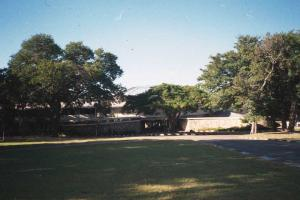

|
|
|
|
|  |
Walking safari was a total failure, not because of the safari per se being a failure, but because I was not part of it. I got woken up via radio at the last minute, and people wouldn't reply so I took my time and went from my tent to the meeting point, but it was too late. Aneesh came to look for me, but he could not even find my tent. So they all left. But the interesting story is this: Yesterday Mani started feeling sick. We had dinner. She had dinner. But it was a little hard an painful. Fever was there, she felt it. She went to sleep, I got my thermometer. Aneesh did not want me to take her temperature. But all the others did. They were in the other Bungalow (we had 3 bungalows, and one camp site) and they would have measured the temperature if I would have not. So I went into Mani's room. And she was sleeping deep, so deep that when I took her temperature she did no even wake up. The thermometer read 40°C, which is very high. The next morning it was down to 38.5°C approx. But Aneesh yesterday night agreed that he would wake up and not go to the safari to take care of Mani, but as things turned out, he did go. The reason probably was that Also Ravi felt sick, and Leena was sick already, although it was her birthday. So Aparna stayed back to take care of everyone. And I happened to be there too, so I helped too. Then they all got back.
The afterenoon started. I went back to my tent to fix the 2 holes I found in it. I also tried to patch up the hole in the therma-rest, that was caused by Kamal sitting on a papercutter and hence snapping it. Then we did a night safari, which was very cold, and kind of cool too. We saw 3 rhinos, white rhinos, actually. And then more of the usual, like giraffes, but also some african kangaroos, which are rabbits, I think, of some sort, but they hop like kangaroos.
Ida Oieda was our cook at the safari lodge. She prepared a gourmet dinner. It was really delicous. So I asked if we could be introuduced to the chef, and we were. She came out, and after Aneesh got back, I cordially thanked her for the delicous dinner. I mean, it was the least thing I could do. The dinner was great, the service was great, even better than the service I got from really good high class restaurants in the rest of the world, and definetely better service than in the USA. And the whole meal for about 700 Zm$ which, at our exchange rate of 120Zm$/1USD, it comes out to be abuot 7USD. Just insanely cheap. The rooms are a little more expensive, around 180USD/nite and 280USD for the suites.
| Previous | Home | Next |